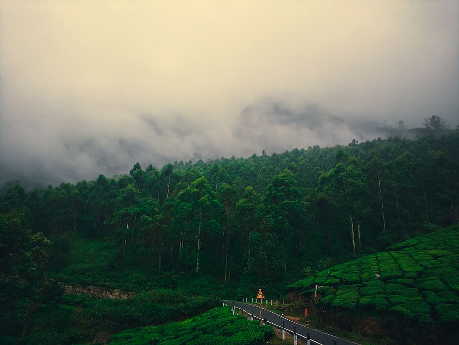
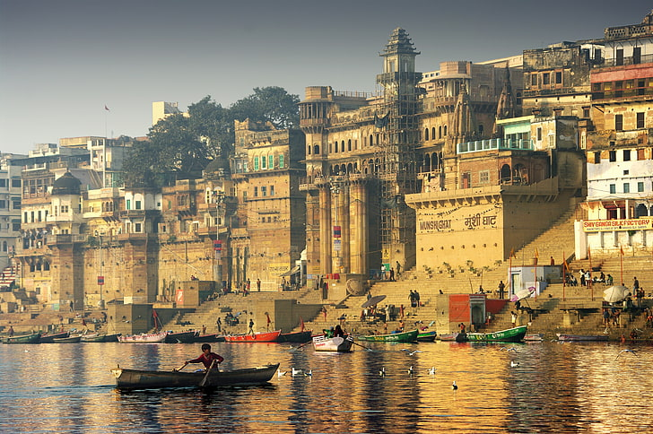

14th February, 2023
Taj Mahal : Symbol of Love
The Taj Mahal is an iconic mausoleum located in Agra, India. It was commissioned by the Mughal emperor Shah Jahan in the 17th century as a tribute to his beloved wife, Mumtaz Mahal. Considered one of the world's most remarkable architectural masterpieces, the Taj Mahal is renowned for its exquisite beauty and grandeur. The structure combines elements of Persian, Islamic, and Indian architectural styles, showcasing a perfect blend of symmetry, precision, and intricate detailing.
The Taj Mahal is constructed entirely of white marble and stands on a raised platform at the southern bank of the Yamuna River. The mausoleum is famous for its symmetrical layout, with four minarets flanking the central domed structure. The main dome, reaching a height of 73 meters (240 feet), is adorned with intricate carvings and inlaid with precious stones. The interior of the Taj Mahal features equally breathtaking craftsmanship, with intricate floral patterns, calligraphy, and semi-precious stone inlays. As a symbol of eternal love and a UNESCO World Heritage Site, the Taj Mahal attracts millions of visitors each year, leaving them in awe of its beauty and historical significance.

15th August, 2023
Red Fort : Symbol of Independence
The Red Fort, also known as Lal Qila, is a magnificent fortress situated in Old Delhi, India. Constructed by the Mughal Emperor Shah Jahan in the 17th century, it served as the imperial residence of the Mughal dynasty for nearly 200 years. The fort is named after its striking red sandstone walls that stretch for about 2.5 kilometers (1.6 miles) in length. Its imposing architecture reflects a fusion of Persian, Islamic, and Indian styles, featuring intricate carvings, domes, and ornamental embellishments.
The Red Fort encompasses an expansive complex that includes numerous structures and gardens. Notable attractions within its premises are the Diwan-i-Aam (Hall of Public Audience) and the Diwan-i-Khas (Hall of Private Audience), where the emperor held official gatherings and met important dignitaries. The fort also houses the Rang Mahal (Palace of Colors), which was the residence of the emperor's wives and concubines. Additionally, the fort's delightful gardens, such as the Hayat Bakhsh Bagh and the Mehtab Bagh, provide serene retreats from the bustling city outside. Today, the Red Fort stands as a UNESCO World Heritage Site and serves as a symbol of India's rich history and cultural heritage, attracting countless visitors who marvel at its grandeur and immerse themselves in its storied past.

22nd November, 2023
Munnar : Symbol of Beauty
Munnar is a breathtaking hill station nestled in the Western Ghats of Kerala, India. Known for its lush green tea plantations, misty mountains, and cool climate, Munnar offers a tranquil and rejuvenating escape from the bustling city life. The region's picturesque landscapes, with rolling hills blanketed in vibrant shades of green, create a mesmerizing sight that leaves visitors in awe.
Aside from its tea estates, Munnar offers a wealth of attractions. The Eravikulam National Park, home to the endangered Nilgiri Tahr, offers thrilling treks amidst stunning natural beauty. The park's scenic trails lead to cascading waterfalls, enchanting meadows, and panoramic viewpoints. Adventure seekers can indulge in activities like rock climbing and paragliding, while those seeking tranquility can relax by the serene Kundala Lake or take a boat ride at Mattupetty Dam.
In Munnar, visitors can immerse themselves in the serenity of nature, enjoy the cool mountain air, and soak in the beauty of the Western Ghats. Whether it's exploring tea gardens, embarking on adventurous treks, or simply unwinding amidst the tranquility of the hills, Munnar offers a rejuvenating escape that lingers in the memories of all who visit.

17th October, 2023
Varanasi : Symbol of sacredness
Varanasi, also known as Kashi or Banaras, is a city in northern India that holds great religious and cultural significance. Situated on the banks of the sacred River Ganges, Varanasi is one of the oldest continuously inhabited cities in the world. It is considered the spiritual capital of India, attracting millions of pilgrims and tourists each year.
Varanasi is renowned for its ghats, a series of steps leading down to the Ganges, where people gather to perform religious rituals, take holy dips, and seek spiritual cleansing. The city is dotted with numerous temples, including the famous Kashi Vishwanath Temple dedicated to Lord Shiva. The Ganga Aarti ceremony, a spectacular display of devotion held every evening, is a highlight for visitors. Varanasi is a place where life and death intertwine, as the Manikarnika Ghat serves as the main cremation ground. The narrow lanes of Varanasi exude a captivating charm, filled with vibrant markets, bustling shops, and the echoes of ancient traditions. The city offers a unique and immersive experience, immersing visitors in the richness of Indian spirituality, culture, and rituals.